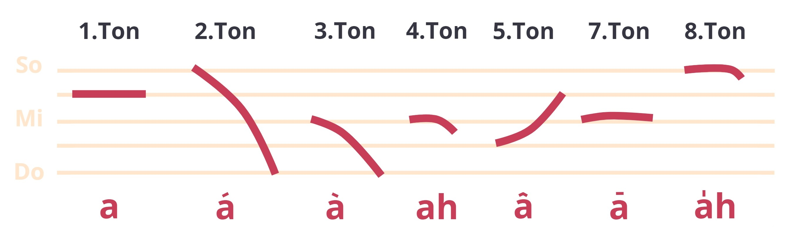

<div class="container-fluid">
  <div class="row">
    <div class="col-9 p-5 mx-auto">

<!-- consonant -->
<h1>Consonants</h1>

<p>Consonants are pronounced by stopping the air from flowing easily through the mouth, especially by closing the lips or touching the teeth with the tongue. There are 18 consonants in Taiwanese.</p>

<table>
  <caption>Consonants</caption>
  <thead>
    <tr>
      <th></th>
      <th>Tenuis<br>voiceless sounds</th>
      <th>Aspiration<br>voiceless sounds</th>
      <th>Nasal sounds</th>
      <th>Tenuis<br>voiced sounds</th>
    </tr>
  </thead>
  <tbody>
    <tr>
      <th>Labial consonants</th>
      <td>p</td>
      <td>ph</td>
      <td>m</td>
      <td>b</td>
    </tr>
    <tr>
      <th>Apical consonants</th>
      <td>t</td>
      <td>th</td>
      <td>n</td>
      <td>l</td>
    </tr>
    <tr>
      <th>Pharyngeal consonants</th>
      <td>k</td>
      <td>kh</td>
      <td>ng</td>
      <td>g</td>
    </tr>
    <tr>
      <th>Dental consonants</th>
      <td>ts</td>
      <td>tsh</td>
      <td>s</td>
      <td>j</td>
    </tr>
    <tr>
      <th>Guttural consonants</th>
      <td>h</td>
      <td></td>
      <td></td>
      <td></td>
    </tr>
  </tbody>
  
</table>
      

<!-- Vowels -->
     
<h1>Vowels</h1>
      <p>Vowel is a speech sound produced by humans when the breath flows out through the mouth without being blocked by the teeth, tongue, or lips.</p>
      <ol>
        <li>Basic vowel: a, i, u, e, oo, o </li>
        <li>Syllabic consonant: m, ng</li>
        <li>Nasal vowel: nn</li>
        <li>Velar nasal:  -m, -n, -ng</li>
        <li>Final glottal plosive: -p, -t, -k, -h</li>
      </ol>
      
      
<h1>Tones</1>
      <p>Taiwanese is a tonal language; that is, Taiwanese uses tone to distinguish words. In the traditional analysis, there are eight "tones", numbered from 1 to 8. Nowadays, there are seven tones encounter. </p>



<p></p>

<h2>tone sandhi</h2>

<p>Tone sandhi is a phonological change occurring in tonal languages. In Taiwanese, phrasing and word group is the main reason for tone sandhi. Taiwanese uses the change of tone to express meaning.</p>
      
    </div>
  </div>
</div>


